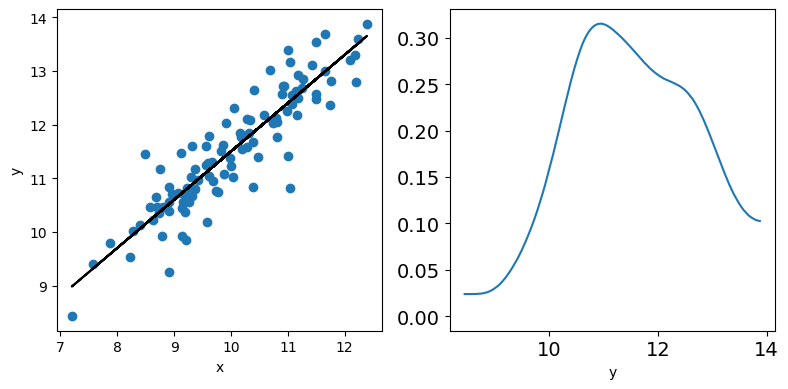
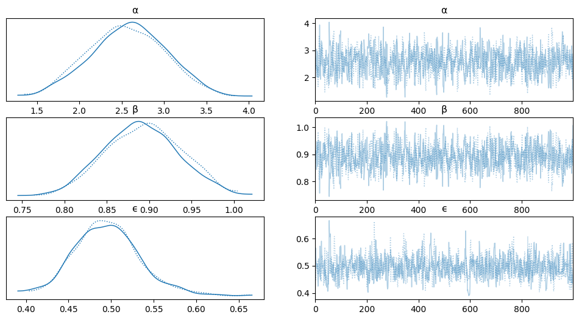
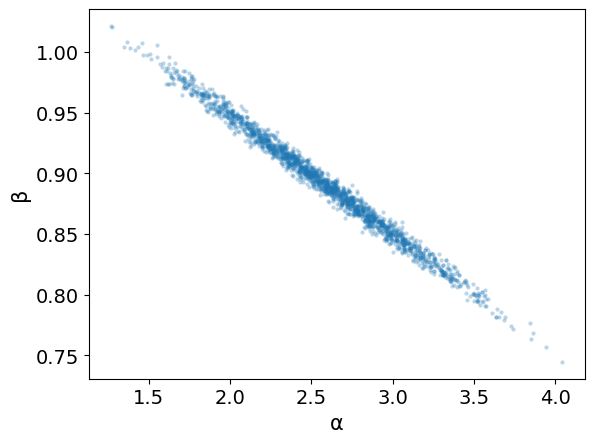
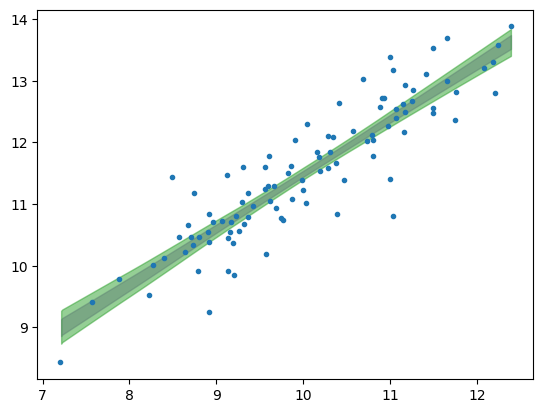
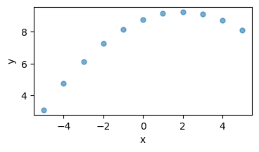
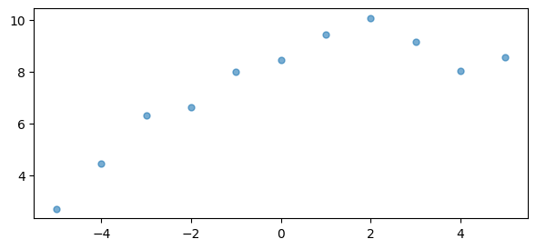
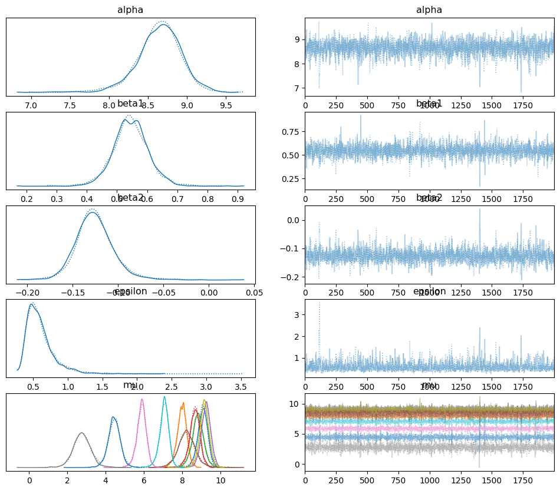
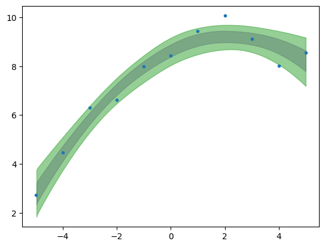
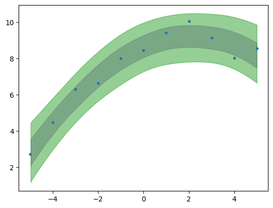
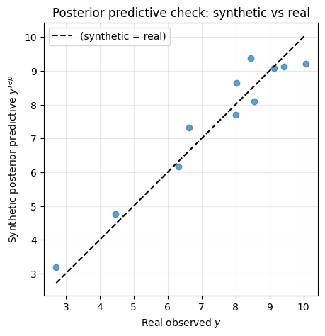

Bayesian Linear Regression#
%pip install pymc pytensor
Requirement already satisfied: pymc in /usr/local/lib/python3.12/dist-packages (5.28.5)
Requirement already satisfied: pytensor in /usr/local/lib/python3.12/dist-packages (2.38.3)
Requirement already satisfied: arviz<1.0,>=0.13.0 in /usr/local/lib/python3.12/dist-packages (from pymc) (0.22.0)
Requirement already satisfied: cachetools<7,>=4.2.1 in /usr/local/lib/python3.12/dist-packages (from pymc) (6.2.6)
Requirement already satisfied: cloudpickle in /usr/local/lib/python3.12/dist-packages (from pymc) (3.1.2)
Requirement already satisfied: numpy>=1.25.0 in /usr/local/lib/python3.12/dist-packages (from pymc) (2.0.2)
Requirement already satisfied: pandas>=0.24.0 in /usr/local/lib/python3.12/dist-packages (from pymc) (2.2.2)
Requirement already satisfied: rich>=13.7.1 in /usr/local/lib/python3.12/dist-packages (from pymc) (13.9.4)
Requirement already satisfied: scipy>=1.4.1 in /usr/local/lib/python3.12/dist-packages (from pymc) (1.16.3)
Requirement already satisfied: threadpoolctl<4.0.0,>=3.1.0 in /usr/local/lib/python3.12/dist-packages (from pymc) (3.6.0)
Requirement already satisfied: typing-extensions>=3.7.4 in /usr/local/lib/python3.12/dist-packages (from pymc) (4.15.0)
Requirement already satisfied: setuptools>=59.0.0 in /usr/local/lib/python3.12/dist-packages (from pytensor) (75.2.0)
Requirement already satisfied: numba<=0.65.1,>=0.58 in /usr/local/lib/python3.12/dist-packages (from pytensor) (0.60.0)
Requirement already satisfied: filelock>=3.15 in /usr/local/lib/python3.12/dist-packages (from pytensor) (3.29.1)
Requirement already satisfied: etuples in /usr/local/lib/python3.12/dist-packages (from pytensor) (0.3.10)
Requirement already satisfied: logical-unification in /usr/local/lib/python3.12/dist-packages (from pytensor) (0.4.7)
Requirement already satisfied: miniKanren in /usr/local/lib/python3.12/dist-packages (from pytensor) (1.0.5)
Requirement already satisfied: cons in /usr/local/lib/python3.12/dist-packages (from pytensor) (0.4.7)
Requirement already satisfied: matplotlib>=3.8 in /usr/local/lib/python3.12/dist-packages (from arviz<1.0,>=0.13.0->pymc) (3.10.0)
Requirement already satisfied: packaging in /usr/local/lib/python3.12/dist-packages (from arviz<1.0,>=0.13.0->pymc) (26.2)
Requirement already satisfied: xarray>=2023.7.0 in /usr/local/lib/python3.12/dist-packages (from arviz<1.0,>=0.13.0->pymc) (2025.12.0)
Requirement already satisfied: h5netcdf>=1.0.2 in /usr/local/lib/python3.12/dist-packages (from arviz<1.0,>=0.13.0->pymc) (1.8.1)
Requirement already satisfied: xarray-einstats>=0.3 in /usr/local/lib/python3.12/dist-packages (from arviz<1.0,>=0.13.0->pymc) (0.10.0)
Requirement already satisfied: llvmlite<0.44,>=0.43.0dev0 in /usr/local/lib/python3.12/dist-packages (from numba<=0.65.1,>=0.58->pytensor) (0.43.0)
Requirement already satisfied: python-dateutil>=2.8.2 in /usr/local/lib/python3.12/dist-packages (from pandas>=0.24.0->pymc) (2.9.0.post0)
Requirement already satisfied: pytz>=2020.1 in /usr/local/lib/python3.12/dist-packages (from pandas>=0.24.0->pymc) (2025.2)
Requirement already satisfied: tzdata>=2022.7 in /usr/local/lib/python3.12/dist-packages (from pandas>=0.24.0->pymc) (2026.2)
Requirement already satisfied: markdown-it-py>=2.2.0 in /usr/local/lib/python3.12/dist-packages (from rich>=13.7.1->pymc) (4.2.0)
Requirement already satisfied: pygments<3.0.0,>=2.13.0 in /usr/local/lib/python3.12/dist-packages (from rich>=13.7.1->pymc) (2.20.0)
Requirement already satisfied: toolz in /usr/local/lib/python3.12/dist-packages (from logical-unification->pytensor) (0.12.1)
Requirement already satisfied: multipledispatch in /usr/local/lib/python3.12/dist-packages (from logical-unification->pytensor) (1.0.0)
Requirement already satisfied: mdurl~=0.1 in /usr/local/lib/python3.12/dist-packages (from markdown-it-py>=2.2.0->rich>=13.7.1->pymc) (0.1.2)
Requirement already satisfied: contourpy>=1.0.1 in /usr/local/lib/python3.12/dist-packages (from matplotlib>=3.8->arviz<1.0,>=0.13.0->pymc) (1.3.3)
Requirement already satisfied: cycler>=0.10 in /usr/local/lib/python3.12/dist-packages (from matplotlib>=3.8->arviz<1.0,>=0.13.0->pymc) (0.12.1)
Requirement already satisfied: fonttools>=4.22.0 in /usr/local/lib/python3.12/dist-packages (from matplotlib>=3.8->arviz<1.0,>=0.13.0->pymc) (4.63.0)
Requirement already satisfied: kiwisolver>=1.3.1 in /usr/local/lib/python3.12/dist-packages (from matplotlib>=3.8->arviz<1.0,>=0.13.0->pymc) (1.5.0)
Requirement already satisfied: pillow>=8 in /usr/local/lib/python3.12/dist-packages (from matplotlib>=3.8->arviz<1.0,>=0.13.0->pymc) (11.3.0)
Requirement already satisfied: pyparsing>=2.3.1 in /usr/local/lib/python3.12/dist-packages (from matplotlib>=3.8->arviz<1.0,>=0.13.0->pymc) (3.3.2)
Requirement already satisfied: six>=1.5 in /usr/local/lib/python3.12/dist-packages (from python-dateutil>=2.8.2->pandas>=0.24.0->pymc) (1.17.0)
import numpy as np
import arviz as az
import matplotlib.pyplot as plt
import requests
import io
import csv
import pandas as pd
import pymc as pm
Exercise: Simple Linear Regression#
np.random.seed(123)
N = 100
x = np.random.normal(10,1,N)
eps = np.random.normal(0,0.5,size=N)
alpha_real = 2.5
beta_real = 0.9
y_real = alpha_real + beta_real*x
y = y_real + eps
print(f"x, {x[: 5]}, ... {x[-2 :]}")
print(f"y, {y[: 5]}, ... {y[-2 :]}")
# what happens if you center your data around the origin?
"""
y = y - np.mean(y)
x = x - np.mean(x)
y_real = y_real - np.mean(y_real)
"""
x, [ 8.9143694 10.99734545 10.2829785 8.49370529 9.42139975], ... [10.37940061 9.62082357]
y, [10.8439598 11.40866694 12.11081297 11.44348672 10.96694678], ... [11.67082969 11.04976808]
'\ny = y - np.mean(y)\nx = x - np.mean(x)\ny_real = y_real - np.mean(y_real)\n'
_, ax = plt.subplots(1,2,figsize=(8,4))
ax[0].plot(x,y,'C0o')
ax[0].set_xlabel('x')
ax[0].set_ylabel('y')
ax[0].plot(x,y_real,'k')
az.plot_kde(y,ax=ax[1])
ax[1].set_xlabel('y')
plt.tight_layout()

In PyMC, the with pm.Model() as model: block defines a model context: all random variables created inside the block are automatically added to that probabilistic model.
(high-level) PyMC represents the Bayesian model as a computational graph, where nodes are random variables or deterministic transformations, and edges encode probabilistic or functional dependencies among them. This graph allows PyMC to compute log-probabilities and gradients needed for MCMC sampling.
with pm.Model() as model_lin:
α = pm.Normal('α', mu=0, sigma=10)
β = pm.Normal('β', mu=0, sigma=1)
ϵ = pm.HalfCauchy('ϵ', 5)
μ = pm.Deterministic('μ', α + β * x)
# Deterministic nodes are computed outside the main computation graph,
# which can be optimized as though there was no Deterministic nodes.
# Whereas the optimized graph can be evaluated thousands of times during a NUTS step,
# the Deterministic quantities are just computeed once at the end of the step,
# with the final values of the other random variables
y_pred = pm.Normal('y_pred', mu=α + β * x, sigma=ϵ, observed=y)
trace_lin = pm.sample(1000, tune=1000)
trace_lin.posterior.sizes
Frozen({'chain': 2, 'draw': 1000, 'μ_dim_0': 100})
az.plot_trace(trace_lin, var_names=['α', 'β', 'ϵ'])
array([[<Axes: title={'center': 'α'}>, <Axes: title={'center': 'α'}>],
[<Axes: title={'center': 'β'}>, <Axes: title={'center': 'β'}>],
[<Axes: title={'center': 'ϵ'}>, <Axes: title={'center': 'ϵ'}>]],
dtype=object)

az.summary(trace_lin)
| mean | sd | hdi_3% | hdi_97% | mcse_mean | mcse_sd | ess_bulk | ess_tail | r_hat | |
|---|---|---|---|---|---|---|---|---|---|
| α | 2.572 | 0.450 | 1.706 | 3.369 | 0.018 | 0.010 | 660.0 | 1010.0 | 1.0 |
| β | 0.892 | 0.044 | 0.816 | 0.979 | 0.002 | 0.001 | 670.0 | 969.0 | 1.0 |
| μ[0] | 10.523 | 0.072 | 10.387 | 10.659 | 0.002 | 0.001 | 844.0 | 1281.0 | 1.0 |
| μ[1] | 12.381 | 0.064 | 12.257 | 12.497 | 0.002 | 0.001 | 1236.0 | 1581.0 | 1.0 |
| μ[2] | 11.744 | 0.050 | 11.652 | 11.842 | 0.001 | 0.001 | 1794.0 | 1626.0 | 1.0 |
| ... | ... | ... | ... | ... | ... | ... | ... | ... | ... |
| μ[96] | 10.524 | 0.072 | 10.388 | 10.660 | 0.002 | 0.001 | 844.0 | 1281.0 | 1.0 |
| μ[97] | 10.275 | 0.081 | 10.130 | 10.437 | 0.003 | 0.002 | 782.0 | 1296.0 | 1.0 |
| μ[98] | 11.830 | 0.051 | 11.737 | 11.929 | 0.001 | 0.001 | 1760.0 | 1627.0 | 1.0 |
| μ[99] | 11.153 | 0.053 | 11.056 | 11.257 | 0.001 | 0.001 | 1326.0 | 1526.0 | 1.0 |
| ϵ | 0.495 | 0.038 | 0.421 | 0.568 | 0.001 | 0.001 | 702.0 | 606.0 | 1.0 |
103 rows × 9 columns
MCMC diagnostics#
When we sample from a posterior distribution using MCMC, we need to check whether the numerical sampling is reliable. Common diagnostics include:
Quantity |
Meaning |
Desired behavior |
|---|---|---|
|
Monte Carlo standard error of the estimated posterior mean |
Small compared with posterior |
|
Monte Carlo standard error of the estimated posterior standard deviation |
Small compared with posterior |
|
Effective sample size in the central, high-probability region of the posterior |
Large |
|
Effective sample size in the tails of the posterior |
Large |
|
Convergence diagnostic comparing multiple chains |
Close to 1 |
The posterior standard deviation, sd, describes the uncertainty of the parameter.
The Monte Carlo standard errors, mcse_mean and mcse_sd, describe the numerical uncertainty due to finite MCMC sampling.
A useful rule of thumb is:
In practice, values such as
are usually considered a good sign of convergence.
The effective sample size, ESS, accounts for the fact that MCMC samples are correlated (this is related to the autocorrelation in the chain). Therefore, even if we generate many samples, the number of effectively independent samples may be smaller.
az.plot_pair(trace_lin,var_names=['α','β'], scatter_kwargs={'alpha': 0.3})
<Axes: xlabel='α', ylabel='β'>

Notes
If we did not transorm our data:
Correlation is a direct consequence of our assumption/model.
An increase in the slope means a decrease of the intercept and viceversa.
The line is constrained to pass through the mean of the data (this is actually “relaxed” in the Bayesian model, but still partly true).
In some cases, it could be a good idea transforming our data through:
x' = x - <x>
plt.plot(x,y,'C0.')
az.plot_hdi(x,trace_lin.posterior['μ'],color='C4',hdi_prob=.68)
az.plot_hdi(x,trace_lin.posterior['μ'],color='C2',hdi_prob=.95)
<Axes: >

Exercise: Polynomial Regression#
Linear vs Polynomial Regression
Polynomial regression is still a form of linear regression because the model is linear in its coefficients, even though it is nonlinear in the input variable (x). For example, \(y = \beta_0 + \beta_1 x + \beta_2 x^2 + \cdots + \beta_p x^p\) is nonlinear as a function of \(x\), but linear in the parameters \(\beta_0, \beta_1, \ldots, \beta_p\).
target_url = 'https://raw.githubusercontent.com/cfteach/brds/main/datasets/anscombe.csv'
download = requests.get(target_url).content
ans = pd.read_csv(io.StringIO(download.decode('utf-8')))
x = ans[ans.group == 'II']['x'].values
y = ans[ans.group == 'II']['y'].values
x = x - x.mean()
Note
Anscombe’s quartet comprises four data sets that have nearly identical simple descriptive statistics, yet have very different distributions and appear very different when graphed.
https://en.wikipedia.org/wiki/Anscombe’s_quartet
f=plt.figure()
f.set_figwidth(4)
f.set_figheight(2)
plt.xlabel('x')
plt.ylabel('y')
plt.plot(x,y,'C0.',alpha=0.6, markersize=10)
[<matplotlib.lines.Line2D at 0x7bb8f006c4d0>]

yn = y.copy()
yn += np.random.normal(0,.5, len(yn))
f = plt.figure(figsize=(7,3))
plt.plot(x,yn,'C0.',alpha=0.6, markersize=10)
[<matplotlib.lines.Line2D at 0x7bb8f010fe00>]

with pm.Model() as model_poly:
alpha = pm.Normal('alpha',mu=y.mean(),sigma=1)
beta1 = pm.Normal('beta1',mu=0.,sigma=1)
beta2 = pm.Normal('beta2',mu=0.,sigma=1)
epsilon = pm.HalfCauchy('epsilon', 5)
mu = pm.Deterministic('mu',alpha + beta1*x + beta2*x*x)
y_pred = pm.Normal('y_pred', mu=mu, sigma = epsilon, observed = yn)
idata_poly = pm.sample(2000, tune = 2000)
az.plot_trace(idata_poly)
array([[<Axes: title={'center': 'alpha'}>,
<Axes: title={'center': 'alpha'}>],
[<Axes: title={'center': 'beta1'}>,
<Axes: title={'center': 'beta1'}>],
[<Axes: title={'center': 'beta2'}>,
<Axes: title={'center': 'beta2'}>],
[<Axes: title={'center': 'epsilon'}>,
<Axes: title={'center': 'epsilon'}>],
[<Axes: title={'center': 'mu'}>, <Axes: title={'center': 'mu'}>]],
dtype=object)

res2 = az.summary(idata_poly)
print(res2)
mean sd hdi_3% hdi_97% mcse_mean mcse_sd ess_bulk \
alpha 8.640 0.287 8.068 9.138 0.007 0.010 1970.0
beta1 0.546 0.060 0.430 0.658 0.001 0.002 2349.0
beta2 -0.125 0.022 -0.165 -0.085 0.001 0.001 1994.0
epsilon 0.597 0.206 0.315 0.965 0.006 0.012 1352.0
mu[0] 9.060 0.277 8.539 9.565 0.007 0.010 2039.0
mu[1] 7.968 0.279 7.437 8.475 0.007 0.010 2048.0
mu[2] 8.817 0.337 8.126 9.397 0.007 0.009 2698.0
mu[3] 8.640 0.287 8.068 9.138 0.007 0.010 1970.0
mu[4] 9.230 0.257 8.749 9.701 0.006 0.007 2208.0
mu[5] 8.234 0.492 7.277 9.123 0.010 0.015 2466.0
mu[6] 5.873 0.265 5.330 6.324 0.005 0.006 3045.0
mu[7] 2.774 0.484 1.888 3.667 0.010 0.013 2744.0
mu[8] 9.149 0.262 8.681 9.647 0.005 0.006 2578.0
mu[9] 7.046 0.261 6.567 7.537 0.006 0.008 2356.0
mu[10] 4.449 0.335 3.829 5.098 0.006 0.008 3126.0
ess_tail r_hat
alpha 1413.0 1.0
beta1 1858.0 1.0
beta2 1407.0 1.0
epsilon 1669.0 1.0
mu[0] 1428.0 1.0
mu[1] 1451.0 1.0
mu[2] 2170.0 1.0
mu[3] 1413.0 1.0
mu[4] 1580.0 1.0
mu[5] 1982.0 1.0
mu[6] 2017.0 1.0
mu[7] 1827.0 1.0
mu[8] 1989.0 1.0
mu[9] 1658.0 1.0
mu[10] 2279.0 1.0
plt.plot(x,yn,'C0.')
az.plot_hdi(x,idata_poly.posterior['mu'],color='C4',hdi_prob=.68)
az.plot_hdi(x,idata_poly.posterior['mu'],color='C2',hdi_prob=.95)
<Axes: >

Posterior Predictive checks
A posterior predictive check asks:
Can the fitted Bayesian model generate fake data that look like the observed data?
After fitting the model, we have
We then generate replicated data from the posterior predictive distribution:
In practice:
Then we compare the real data \(y\) with the replicated data \(y^{\mathrm{rep}}\).
If the real data look unusual compared with the replicated data, the model may be missing something.
ppc = pm.sample_posterior_predictive(idata_poly, model=model_poly)
plt.plot(x,yn,'C0.')
az.plot_hdi(x,ppc.posterior_predictive['y_pred'],color='C4',hdi_prob=.68)
az.plot_hdi(x,ppc.posterior_predictive['y_pred'],color='C2',hdi_prob=.95)
<Axes: >

# posterior predictive samples
y_rep = ppc.posterior_predictive["y_pred"]
# stack chain and draw into one dimension
y_rep_stacked = y_rep.stack(sample=("chain", "draw"))
# choose one posterior predictive sample
idx = np.random.randint(y_rep_stacked.sizes["sample"])
y_synthetic = y_rep_stacked.isel(sample=idx).values
# use the real observed data
y_real = yn # or y, depending on what you used as observed data
plt.figure(figsize=(5, 5))
plt.plot(y_real, y_synthetic, "C0o", alpha=0.7)
# diagonal reference line
ymin = min(np.min(y_real), np.min(y_synthetic))
ymax = max(np.max(y_real), np.max(y_synthetic))
plt.plot([ymin, ymax], [ymin, ymax], "k--", label="(synthetic = real)")
plt.xlabel("Real observed $y$")
plt.ylabel("Synthetic posterior predictive $y^{rep}$")
plt.title("Posterior predictive check: synthetic vs real")
plt.legend()
plt.grid(alpha=0.3)
plt.show()
